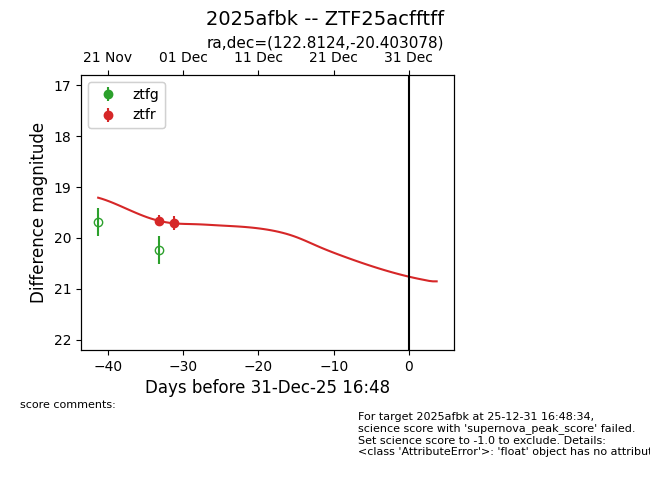
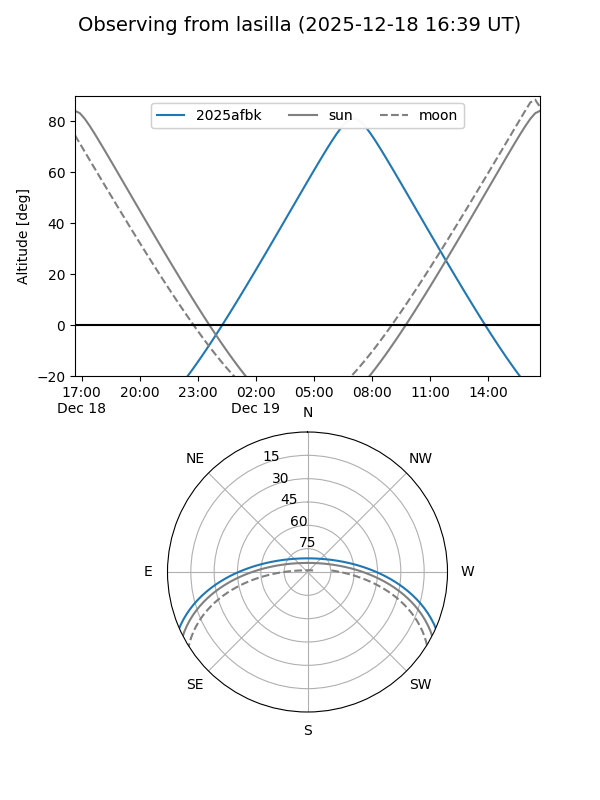
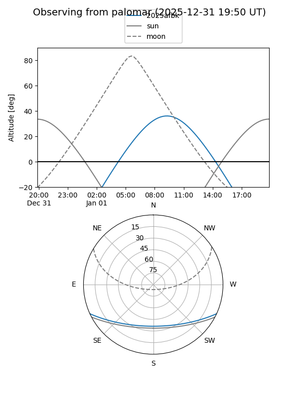
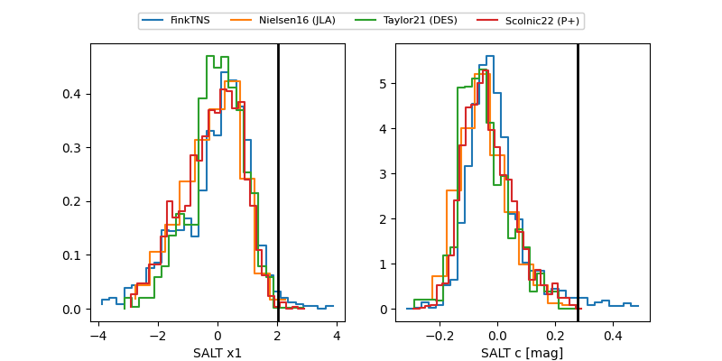

2025afbk
Target 2025afbk at 2025-12-18 11:17
Aliases and brokers:
FINK: fink-portal.org/ZTF25acfftff
Lasair: lasair-ztf.lsst.ac.uk/objects/ZTF25acfftff
ALeRCE: alerce.online/object/ZTF25acfftff
TNS: wis-tns.org/object/2025afbk
YSE: ziggy.ucolick.org/yse/transient_detail/2025afbk
alt names
ZTF25acfftff (ztf,fink_ztf)
2025afbk (tns,yse)
Coordinates:
equatorial (ra, dec) = 122.8124,-20.40308
equatorial (HMS+DMS) = 08:11:14.97,-20:24:11.08
galactic (l, b) = (240.3033,+7.22039)
Photometry
last ztfr=19.71
2 ztfr detections
Lightcurve

Visibility


Additional plots
